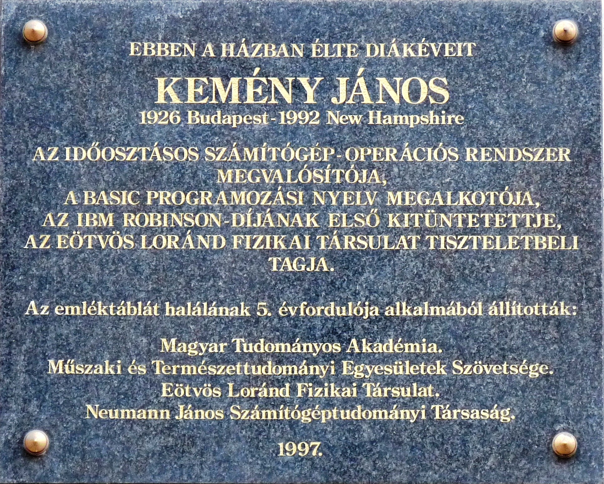
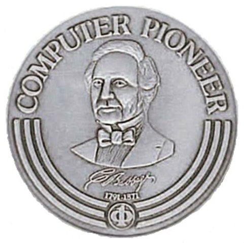

| Teljes neve: | Kemény János György |
| Született: | 1926. május 31., Budapest |
| Elhunyt: | 1992. december 26., New Hampshire, USA |
|  | |
| Nemzetisége: | magyar - amerikai |
| Foglalkozás: | Matematikus, Informatikus, Közgazdász |
| Kitüntetések: | Computer Pioneer Award (1985) |
|  | |